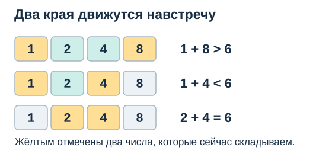

Два указателя и скользящее окно
Как найти пару с заданной суммой
Нужны два числа на разных позициях, дающие в сумме 6. Возьмём отсортированный массив [1, 2, 4, 8]. Один указатель поставим на первый элемент, другой — на последний. Здесь указатели — это два индекса, left и right.
| Числа на краях | Сумма | Следующий шаг |
|---|---|---|
| 1 и 8 | 9 | Убираем 8. Даже с наименьшим числом сумма слишком велика |
| 1 и 4 | 5 | Убираем 1. Даже с наибольшим оставшимся числом суммы не хватает |
| 2 и 4 | 6 | Пара найдена |

Какой край можно отбросить?
Для отсортированного массива [1, 2, 4, 8] выбери нужную сумму. На каждом шаге сравни числа на краях и реши, можно ли убрать одно из них.
В векторе C++ элементы расположены подряд. Оба края последовательно читают соседние адреса. Когда несколько соседних чисел попадают в одну строку кэша, после первого чтения следующие числа могут уже находиться рядом с процессором.
Если индексы встретились, осталась одна позиция и составить пару уже нельзя. Каждый шаг сдвигает одну границу внутрь, поэтому время поиска составляет O(n), дополнительная память — O(1). Если массив сначала приходится сортировать, общее время возрастает до O(n log n).
C++
#include <cstddef>
#include <vector>
using std::size_t;
using std::vector;
using Int = long long;
using Numbers = vector<Int>;
bool pair_sorted(const Numbers& values, Int target) {
if (values.size() < 2) return false;
size_t left = 0, right = values.size() - 1;
while (left < right) {
Int current_sum = values[left] + values[right];
if (current_sum == target) return true;
if (current_sum < target) ++left;
else --right;
}
return false;
}
Тот же алгоритм на Python
def pair_sorted(values, target):
left, right = 0, len(values) - 1
while left < right:
current_sum = values[left] + values[right]
if current_sum == target:
return True
if current_sum < target:
left += 1
else:
right -= 1
return False
Как найти самый длинный участок с ограниченной суммой
Пусть все числа и предел суммы неотрицательны. Окном будем называть непрерывный участок массива между границами left и right включительно. При расширении вправо прибавляем новый элемент к сумме. Пока сумма больше предела, убираем элементы слева.
Для массива [1, 2, 1, 0, 4] и предела 3 окно меняется так.
| Добавили справа | Что убрали слева | Оставшееся окно | Сумма |
|---|---|---|---|
| 1 | — | [1] |
1 |
| 2 | — | [1, 2] |
3 |
| 1 | 1 | [2, 1] |
3 |
| 0 | — | [2, 1, 0] |
3 |
| 4 | 2, 1, 0 и 4 | [] |
0 |
Самое длинное допустимое окно — [2, 1, 0], его длина равна 3. Удалённые элементы можно больше не рассматривать. Если с некоторым началом сумма уже велика, то добавление неотрицательных чисел справа её только сохранит или увеличит.
Каждый элемент добавляем один раз и удаляем не более одного раза. Поэтому два вложенных цикла вместе занимают O(n) времени и используют O(1) дополнительной памяти.
С отрицательными числами это рассуждение перестаёт работать. В массиве [4, −2] при пределе 3 алгоритм сразу удалил бы четвёрку, хотя сумма всего массива равна 2.
C++
#include <algorithm>
#include <cstddef>
#include <vector>
using std::max;
using std::size_t;
using std::vector;
using Int = long long;
using Numbers = vector<Int>;
size_t longest_at_most(const Numbers& values, Int limit) {
size_t left = 0, best_length = 0;
Int current_sum = 0;
for (size_t right = 0; right < values.size(); ++right) {
current_sum += values[right];
while (current_sum > limit) {
current_sum -= values[left];
++left;
}
best_length = max(best_length, (right + 1) - left);
}
return best_length;
}
Тот же алгоритм на Python
def longest_at_most(values, limit):
left = current_sum = best_length = 0
for right, value in enumerate(values):
current_sum += value
while current_sum > limit:
current_sum -= values[left]
left += 1
best_length = max(best_length, right - left + 1)
return best_length